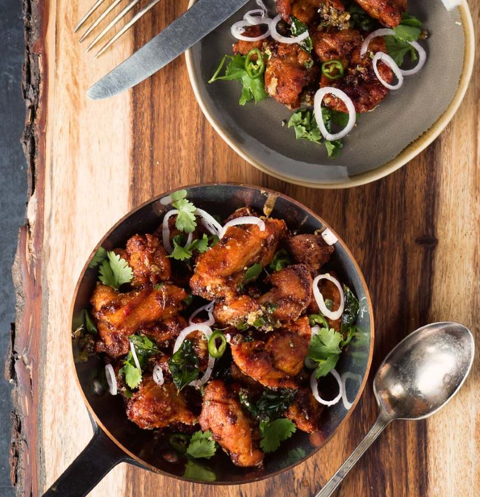

Chicken 65

Chicken 65 is the ultimate Indian party snack.
But this is the ultimate Indian nosh. You could serve it on greens.
You could maybe wrap it in Indian flat bread.
But I say just serve it up. On a platter. With toothpicks for people to serve themselves.
Grazing style. With drinks. Make lots. They will want more.
Chicken 65. Strange name. And nobody knows why it’s chicken 65.
Some say it cost 65 rupees originally. Others say it was invented in a hotel kitchen in 1965
Information
- Prep Time : 10 minutes
- Cook Time : 20 minutes
- Marinating Time : 2 hours
- Total Time : 2 hour 30 minutes
- Servings : 4
- Calories : 280 kcal
Ingredients
Chicken 65 seasoning
- 1.5 tsp kashmiri chili powder
- 1.5 tsp paprika
- 1/2 tsp black pepper
- 1/2 tsp tandoori masala
- 1 tsp garam masala
- 1 tsp salt
- 2 tsp corn starch
Chicken 65 tempering
- 2 tbsp vegetable oil
- 1/2 tsp cumin seed
- 1/2 tsp mustard seed
- 1 tbsp garlic ginger paste
- 1-2 green chilies - finely diced
- 20 fresh curry leaves
Steps
-
Make the tempering
Heat the oil in a frying pan until it just shimmers. Add the cumin and mustard seeds and fry about 20 seconds. Add the curry leaves and fry another 10 seconds or so.
Add the garlic ginger paste and green chilies and cook until the garlic ginger paste stops sputtering.
Set aside.
-
Combine the chicken 65 seasoning ingredients. Mix well with the chicken thigh pieces.
Let sit, covered, in the fridge for about 2 hours.
-
Heat enough vegetable oil come up about 1 inch in a cast iron frying pan. Try to regulate your heat so the oil is at 350F.
-
Fry the chicken in 3 batches. It doesn't doesn't take long. You want an internal temperature of 170F - around 3-4 minutes.
Depends on the temperature of the oil and the size of the chicken pieces.
-
As the batches of chicken cook, add them into the frying pan with the tempering. Toss to combine. Add a bit of salt to taste.
Garnish. Cilantro, sliced shallots or mild onion and green chili slices all work well.
Back To Home Page